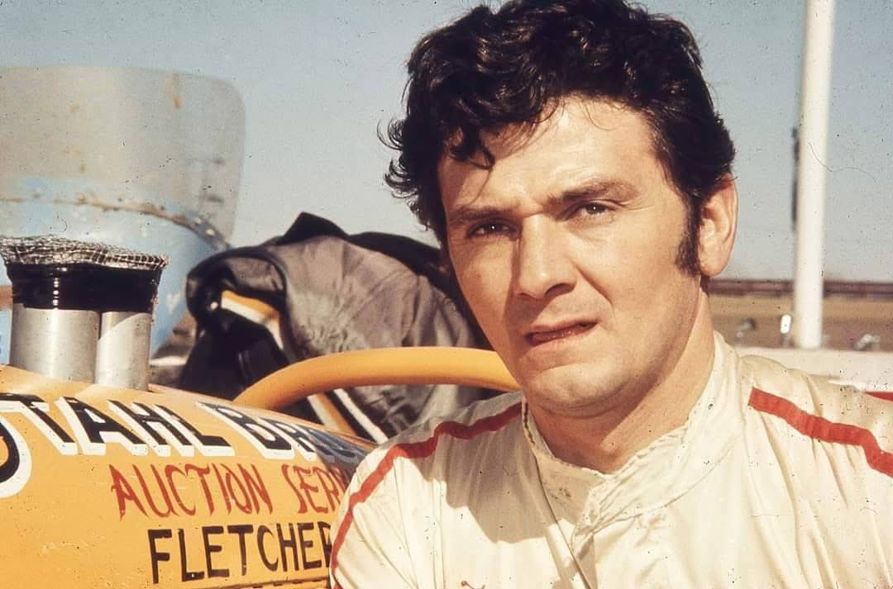

Cy Fairchild, Michigan Racer and USAC Sprint Car Winner, Dies at 91
The Michigan driver won his first feature at 15, co-drove to the 1967 Little 500 win and scored two USAC sprint car victories at New Bremen, Ohio.

Cy Fairchild, a USAC sprint car feature winner from Michigan, died on Nov. 15, 2026, at the age of 91, USAC reported. Fairchild, whose full name was Cyrus LaGrande Fairchild Jr., competed from 1952 through about 1979 and was reported to have won more than 800 feature races during his career, according to the USAC obituary by Stan Kalwasinski.
Fairchild, a boxer in his younger days, won his first main event in 1952 in a Ford coupe at Michigan’s Dixie Motor Speedway at 15 years of age, USAC said. He was tough to beat at Michigan tracks including Dixie, Zilwaukee, Auburn, Owosso and Cadillac before moving to sprint cars with the International Motor Contest Association and USAC. He co-drove with Ohio’s Darl Harrison to victory in the 1967 IMCA-sanctioned Little 500 at Sun Valley Speedway in Anderson, Indiana, taking over in relief at the 384-lap mark and finishing with a three-lap lead in the Loren Weyant-Tom Schemmer, Chevy-powered No. 91.
Fairchild began racing with USAC in 1968 and finished 11th in that year’s final sprint car standings, according to USAC. He won a non-points USAC race in the second leg of the “triple 33s” at Ohio’s Dayton Speedway in September 1968 in the Stahl Brothers No. 36. In 1969 he finished sixth in USAC points and won his first USAC feature at New Bremen Speedway in Ohio that April in the Stahl Brothers car. He was badly injured in a USAC sprint car race at New Bremen in April 1970 and returned to score his second and final USAC win there on Oct. 24, 1971, driving a converted Indianapolis 500 roadster owned by Ben Leyba.
Fairchild entered the 1969 Indianapolis 500 but wrecked his Lotus in practice and did not qualify, and he attempted to qualify for NASCAR’s Daytona 500 in 1966 but did not make the race, USAC said. A cattle rancher, he was for a time the promoter at Tri-City Speedway in Auburn, Michigan. He was inducted into the Michigan Motorsports Hall of Fame in 1988.